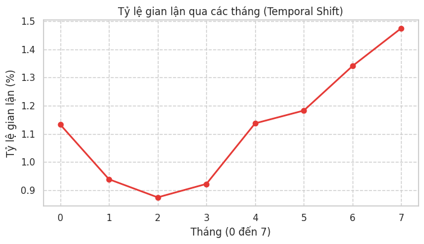
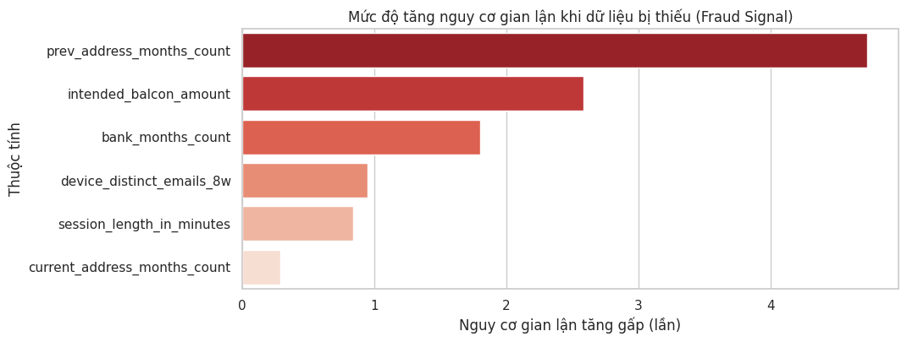
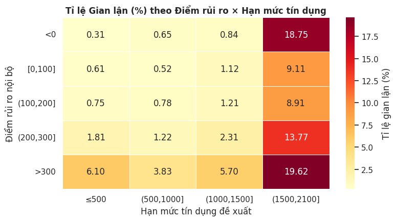
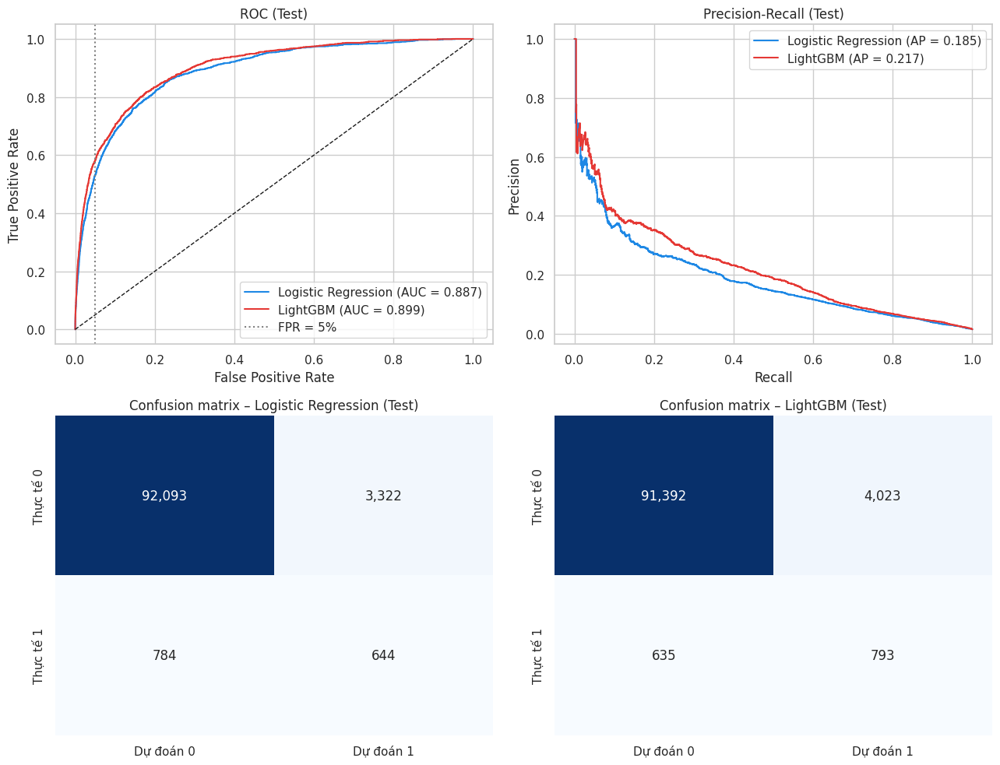
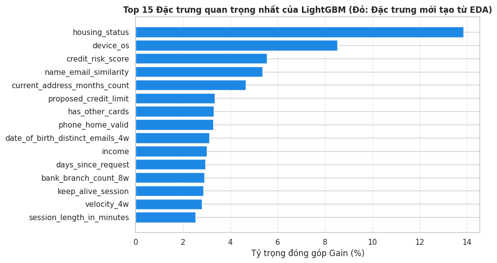
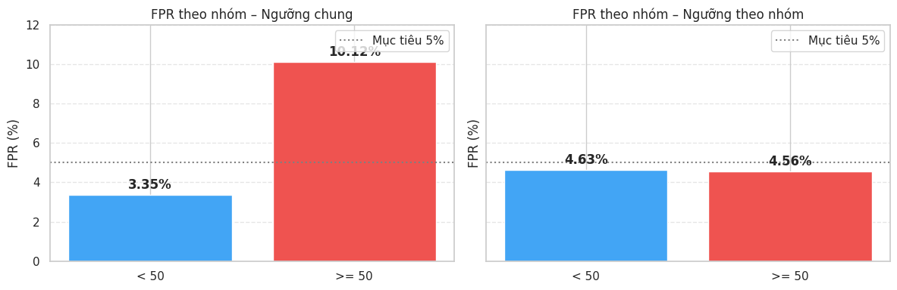
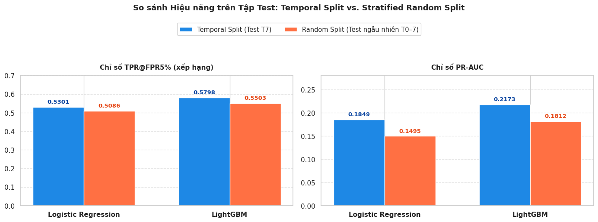

Bank Account Fraud Detection
Phân tích khám phá, kiểm định dữ liệu khuyết ẩn, đánh giá công bằng nhân khẩu học và mô hình hóa phát hiện gian lận mở tài khoản ngân hàng trên 1.000.000 hồ sơ.
01. Tổng quan bài toán & Chỉ số chính
Binary Classification
Phát hiện các đơn đăng ký mở tài khoản ngân hàng gian lận trên tập Bank Account Fraud (Base.csv) gồm 1.000.000 hồ sơ trải dài qua 8 tháng (tỷ lệ gian lận chỉ 1,10%, xấp xỉ 1 ca trên 89 hồ sơ hợp pháp). Do mất cân bằng lớp cực hạn và hiện tượng dịch chuyển phân phối theo thời gian (temporal shift), bài toán dùng TPR@5%FPR làm thước đo chính thay cho Accuracy, đồng thời áp dụng Temporal Split (Train: tháng 0–5; Validation: tháng 6; Test: tháng 7).
02. Tập dữ liệu, Nhãn mục tiêu & Làm sạch
1.000.000 × 32
Kiểm tra toàn vẹn phát hiện 0 dòng trùng lặp và 0 giá trị NaN mặc định, nhưng cột hằng số device_fraud_count (chỉ chứa 0) bị loại bỏ và 6 thuộc tính thực chất mã hóa dữ liệu khuyết bằng số âm (-1 hoặc < 0 ở intended_balcon_amount với 74,25% dòng). Toàn bộ giá trị khuyết ẩn được chuẩn hóa về NaN kèm 6 cờ nhị phân _flag để bảo lưu tín hiệu hành vi.
03. Quy trình thực hiện
42 đặc trưngKiểm toán dữ liệu & Temporal Split
Loại bỏ cột hằng số, chuyển 6 cột khuyết ẩn sang NaN + tạo 6 cờ _flag; tách Train (T0–5: 794.989), Validation (T6: 108.168) và Test (T7: 96.843).
EDA trên tập Train & Kỹ thuật đặc trưng
Phát hiện cơ chế thiếu MNAR, giữ nguyên ngoại lai vận tốc, đo PSI/Mutual Information và bổ sung 6 đặc trưng tỷ lệ (limit_per_income, addr_per_age, vel_6h_24h...).
Mô hình hóa & Khóa ngưỡng Validation
Đối chiếu Logistic Regression (SimpleImputer(median) + RobustScaler + One-Hot trong Pipeline) với LightGBM (trung bình 3 seed, giữ NaN); chọn ngưỡng tại FPR ≤ 5% trên tháng 6.
Kiểm định Bootstrap, Fairness & Ablation
Đánh giá Bootstrap 1.000 mẫu trên Test tháng 7, kiểm tra chênh lệch FPR theo nhóm tuổi (< 50 vs ≥ 50) và chạy 2 thực nghiệm kiểm chứng giả thuyết EDA.
04. Khám phá dữ liệu & Phát hiện chính (EDA)
df_train · T0–5
Dữ liệu khuyết mang tín hiệu rủi ro rõ rệt (rủi ro tăng 4,73× khi thiếu prev_address_months_count và 2,58× khi thiếu intended_balcon_amount), đồng thời các cặp biến như credit_risk_score > 300 × hạn mức (1500, 2100] tạo cụm rủi ro phi tuyến lên tới 19,62%.



05. Kết quả thực nghiệm & Kiểm chứng
Test Tháng 7 (96.843 hồ sơ)| Tập / Nguồn | Mô hình | TPR@FPR5% | TPR@ngưỡng | FPR | Precision | ROC-AUC | PR-AUC |
|---|---|---|---|---|---|---|---|
| Val (Tháng 6) | Logistic Regression | 0,5069 | 0,5069 | 0,0495 | 0,1221 | 0,8829 | 0,1565 |
| Val (Tháng 6) | LightGBM | 0,5310 | 0,5310 | 0,0496 | 0,1270 | 0,8948 | 0,1822 |
| Test (Tháng 7) | Logistic Regression | 0,5301 | 0,4510 | 0,0348 | 0,1624 | 0,8868 | 0,1849 |
| Test (Tháng 7) | LightGBM (3 seeds) | 0,5798 | 0,5553 | 0,0422 | 0,1647 | 0,8986 | 0,2173 |
| Paper NeurIPS 2022 | LightGBM (tham chiếu) | 0,5600 | — | 0,0500 | — | — | — |


_flag thiết kế từ EDA nằm trong nhóm đóng góp lớn nhất.
